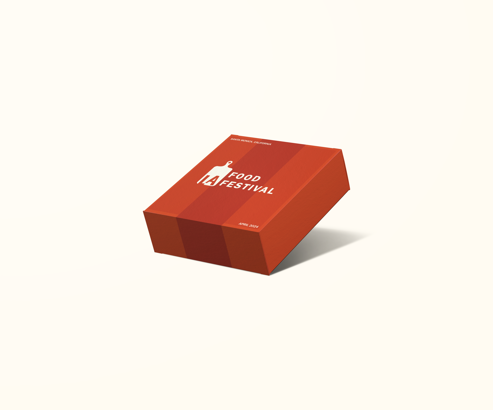
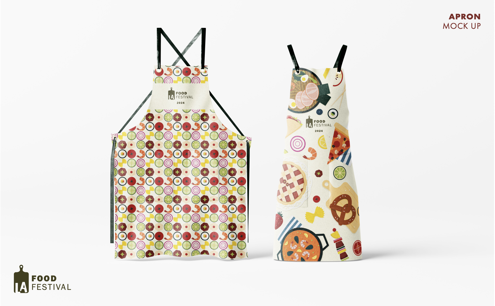
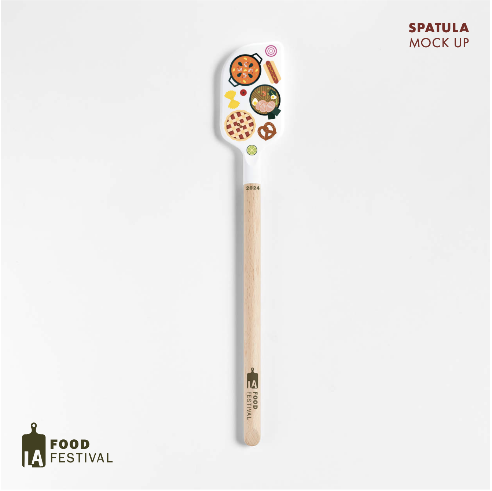
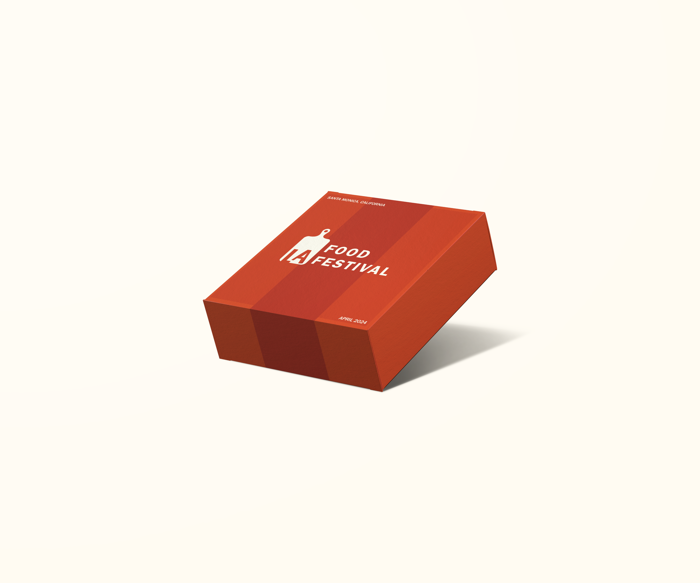
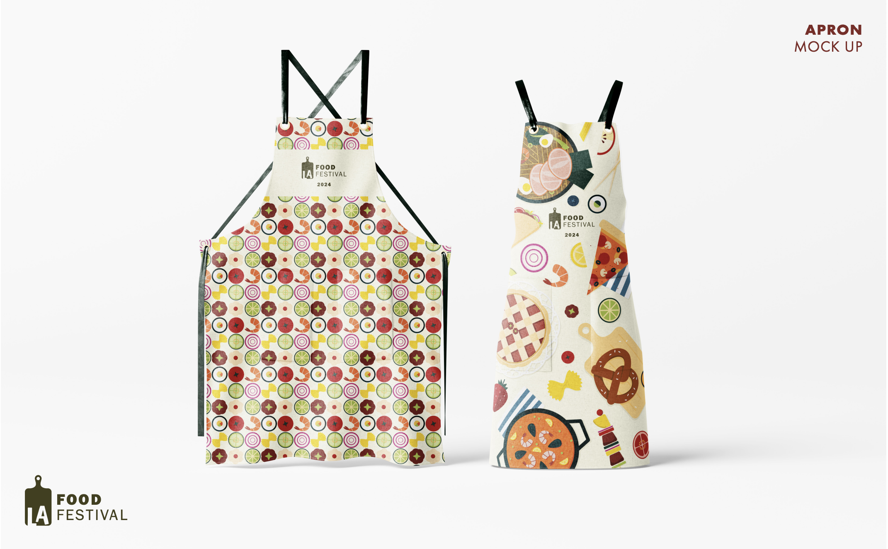
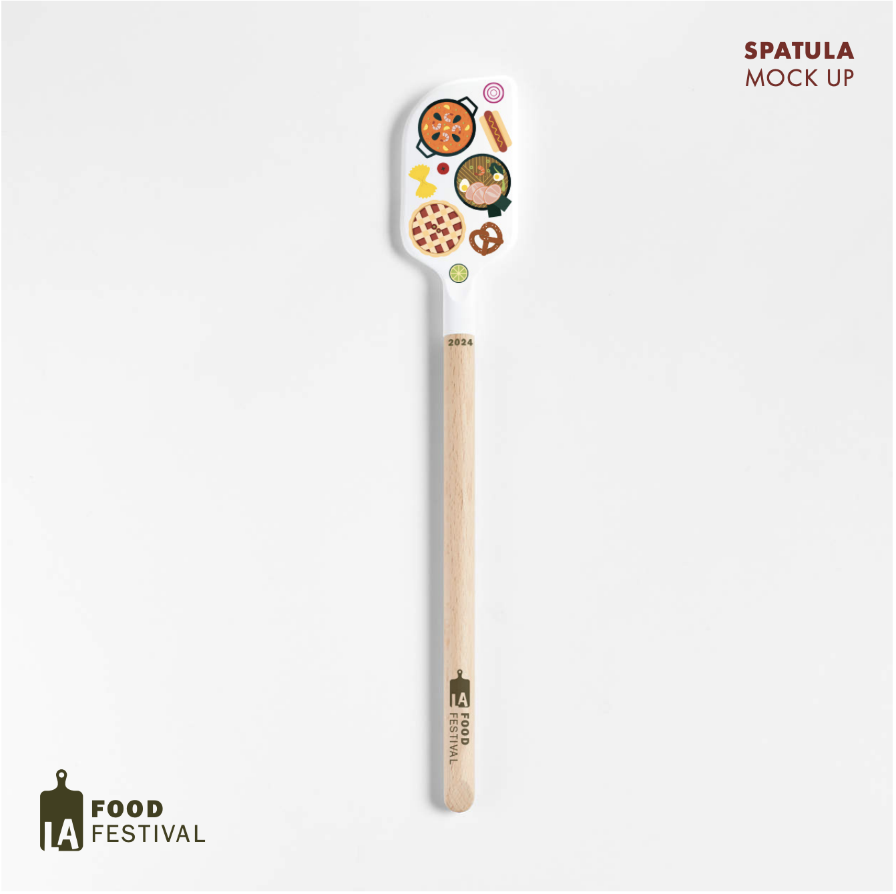

In collaboration with a dynamic group of four individuals, I played a pivotal role in crafting the promotional elements for a vibrant food festival that aimed to attract foodies of all ages. One of my significant contributions involved co-designing a user-friendly festival app in figma, seamlessly integrating essential features to enhance the overall attendee experience. Additionally, I took charge of creating a detailed and visually appealing festival map, ensuring that visitors could easily navigate the diverse culinary offerings. Furthermore, I led the design process for the festival merchandise, conceptualizing and bringing to life an array of eye-catching items. Other elements of this project included the festival posters, boxes, wristbands, and stickers. The culmination of my teams efforts resulted in a cohesive and visually stunning promotional package that reflected the essence of the festival.

The project's objective is to create a cohesive promotional package that aligns with the festival's identity. It entails crafting and assembling a promotional package for LA Food Festival taking place in Los Angeles on April 19-21, 2024. Utilizing the 2024 festival branding and assets, the promotional package will showcase a collectible poster, a map of the site, and a 2025 calendar. These primary pieces will be accompanied by a mobile app, identification wristbands, promotional stickers, and "OTHER" which will be packaged in a box to be shipped out to the festival's top sponsors and fundraisers.
Define Project
Visual Research
Divide Deliverables
Small Group Feedback (Continuous)
Class Feedback (Continuous)
Edit (Continuous)
The primary objective behind developing the app for our food festival was to create a seamless and enjoyable experience for attendees. We aimed to harness the power of technology to enhance festival-goers' interactions with the event, making it not just a culinary delight but an overall engaging and immersive journey. The user-friendly design was crafted to ensure effortless navigation, allowing visitors to effortlessly explore the diverse range of food offerings, locate their favorite vendors, and plan their culinary adventure with ease.By infusing an element of fun into the app, we sought to elevate the overall festival experience, turning it into a memorable and enjoyable occasion for all participants.
Define App Goals
Visual Research
Low Fi
Mid Fi
Class Feedback (Continuous)
High Fi/ Prototype
The primary goal in crafting a visually appealing and easily understandable map for our food festival was to enhance attendee experience through clear and intuitive navigation. Recognizing that the festival grounds would be bustling with diverse culinary offerings, we aimed to provide festival-goers with a comprehensive and aesthetically pleasing guide that would facilitate seamless exploration.
Finalize Vendor List
Logistical Map
Aestetic Map Draft
Group/ Class Feedback (Continuous)
Final
For this project I created fun merchandise for our food festival. The goal was to infuse a sense of joy and festivity into the overall attendee experience. We recognized that the festival was not just about savoring delicious food but also about creating lasting memories and a sense of camaraderie. With this in mind, our goal was to design merchandise that not only showcased the essence of the event but also elicited smiles and excitement from festival-goers.


 




